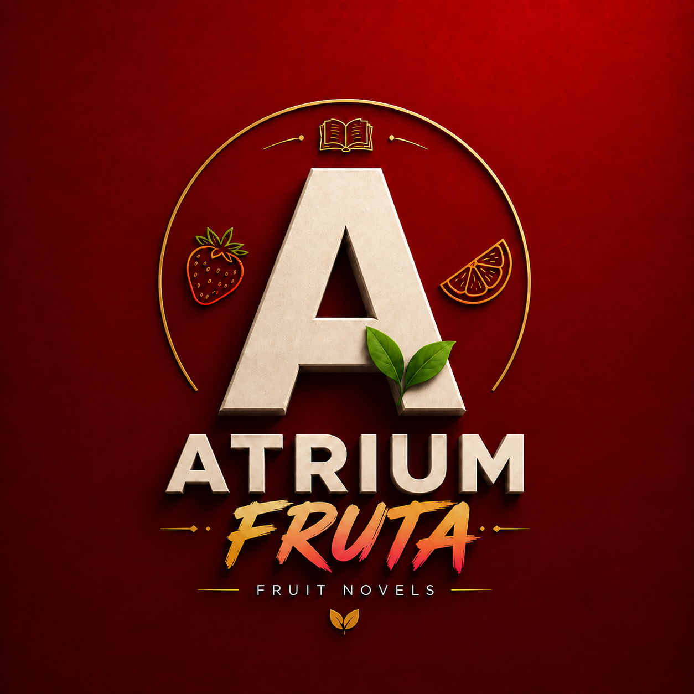

ATRIUM FRUTA
✓
Frutinovelas originales
· Drama · Amor · Fe · Superación
🍓 Drama · 💔 Amor · 🙏 Fe · 🔥 Superación
🎬 Historias que se sienten hasta la última parte
▣ Proyecto de entretenimiento digital
Explorar historias
Contacto
Inicio
Frutinovelas
Más vistas
Sobre nosotros
Contacto